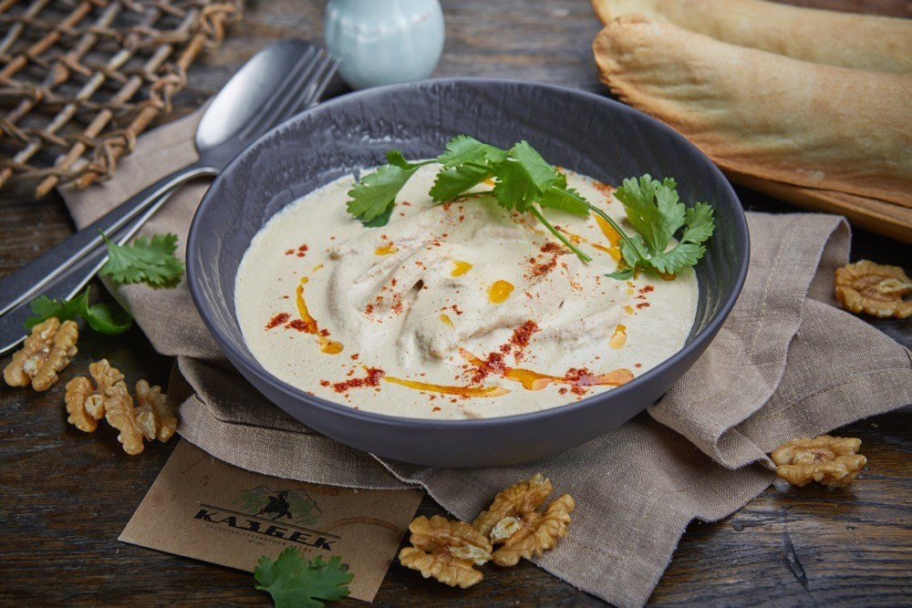

Ингедиенты:
Ингредиенты: Уцхо-сунели 7 г
Ингредиенты:
Соединяем молоко и воду, добавляем дрожжи и сахар.
Размешиваем до растворения дрожжей.
Добавляем 80% от массы муки и начинаем замес, добавляем соль и масло.
Вымешиваем тесто крюком около 10 минут до гладкости.
Делим тесто на 3 части и формуем из них шарики. Накрываем крышками или пленкой.
Готовим начинку. Трем на терке сулугуни и адыгейский сыр, смешиваем.
Делим начинку на 3 части для 3 хачапури.
Формуем хачапури.
Берем один шарик теста, обминаем. Раскатываем в лепешку толщиной около 8-10 мм.
В центр кладем 3/4 объема сыра на 1 хачапури.
Собираем тесто в узелок вокруг начинки. Хорошо защипываем.
Излишек отрываем и убираем в сторону.
Переворачиваем защипом вниз и раскатываем до толщины 1-1,5 см. Смазываем желтком.
Посыпаем оставшейся четвертью начинки.
Отправляем в предварительно разогретую до 200 градусов духовку и выпекаем около 15 минут. Нарезаем хачапури на куски – и наслаждаемся.
Грецкий орех, чеснок, лук и бульон смешать и пробить в блендере. Довести до вкуса специями.
Курицу промыть под холодной водой, удалить остатки требухи.
Отварить до полуготовности с добавлением лука, чеснока и лаврового листа.
Вытащить из воды, посолить. Запекать в духовке при температуре 180 градусов 20 минут.
Остудить. Удалить кожу. Отделить мясо от костей и разделить на крупные волокна.
Готовую курицу 150 гр залить 200 гр соуса сациви. Украсить веточками кинзы и сухим чили перцем.

Сациви с курицей
Баклажаны вымыть, обсушить и нарезать длинными тонкими пластами.
Каждую полоску немного посолить, сложить в миску и оставить на 20-30 минут.
Обжарить баклажаны на растительном масле с двух сторон, до готовности.
Баклажаны выложить на салфетку, чтобы удалить излишки жира.
Лук очистить и мелко нарезать.
В сковороде разогреть немного растительного масла и выложить лук.
Немного посолить и обжарить, помешивая, около 5 минут, до мягкости.
Орехи измельчить в блендере.
Чеснок очистить и пропустить через чесноковыжималку.
Зелень вымыть, обсушить и мелко порубить.
Соединить в миске орехи, лук, зелень и чеснок.
Добавить хмели-сунели, соль, перец, уксус и немного кипяченой воды - все ингредиенты поместить в блендер и смешать до однородной массы.
Ломтики баклажана намазать ореховым соусом (или положить чайную ложку соуса на краешек) и свернуть рулетиком.